michael liu
digital photography, graphic design, 3d modeling
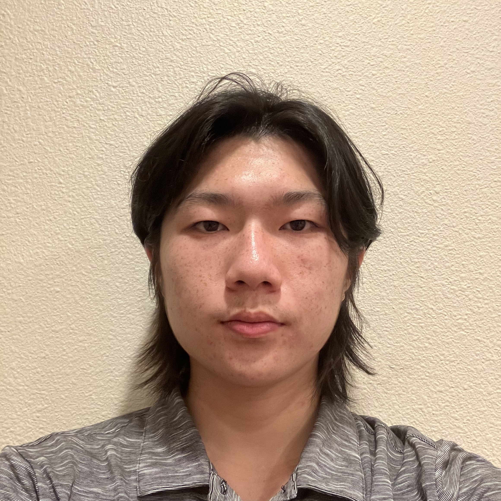
i'm currently a senior at mission san jose high school in fremont, california. i love taking photos of anything that looks interesting to me: nature, technology, architecture, people, or even a combination of all those things! in addition, i'm passionate about graphic design and 3d modeling.
outside of photography, i'm an avid coder and i love running, biking, and taking public transport. you'll also find me restoring vintage computers and keyboards in my spare time.
welcome to my portfolio! please enjoy this collection of my artwork from my digital photography class and from hobby :D
photo essay. | objects. | abstract. | rendered. | resume
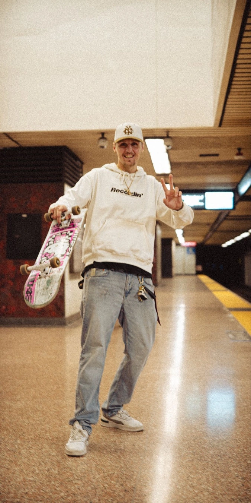
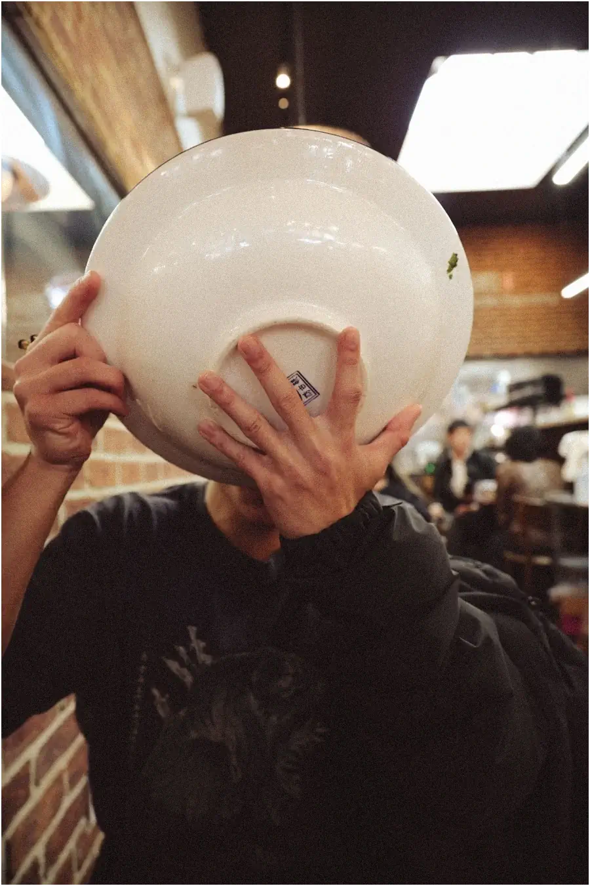
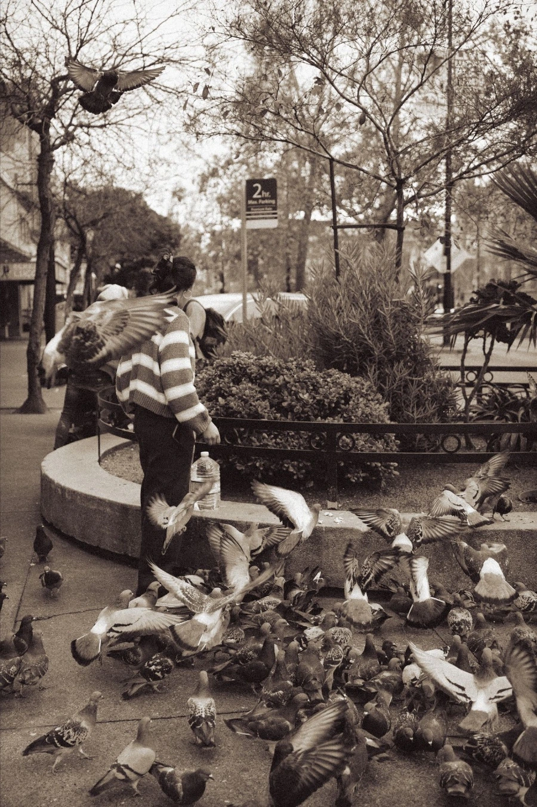
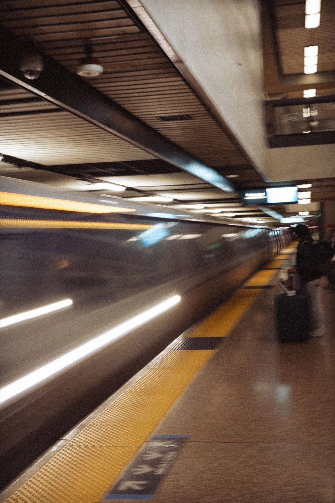
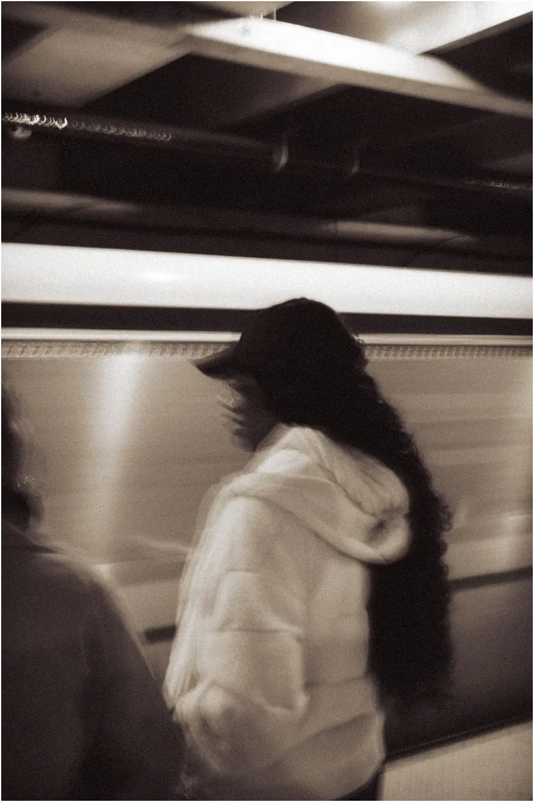
this is a photo essay i created to submit to the 2026 kqed youth media challenge. it centers upon BART, the rapid transport system that we have in the bay area. as mentioned in my bio above, i really do love taking public transport — i think it's a system that should be treasured and loved, not neglected and stigmatized.
i set out to create with writing and photography a story that tells why i love taking public transit, why it's important to have in our modern society, and what it means to the bay area community.
you can see the photo essay here: https://youthmedia.kqed.org/submission/Njk3MTNhMTE1ZjQ1NDczN2M2OWE1NzNi
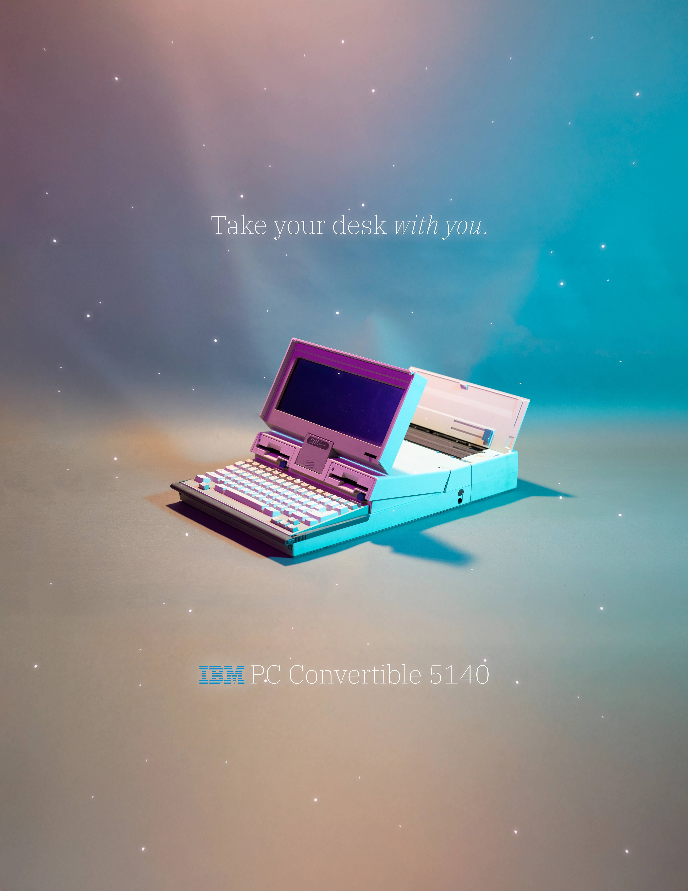
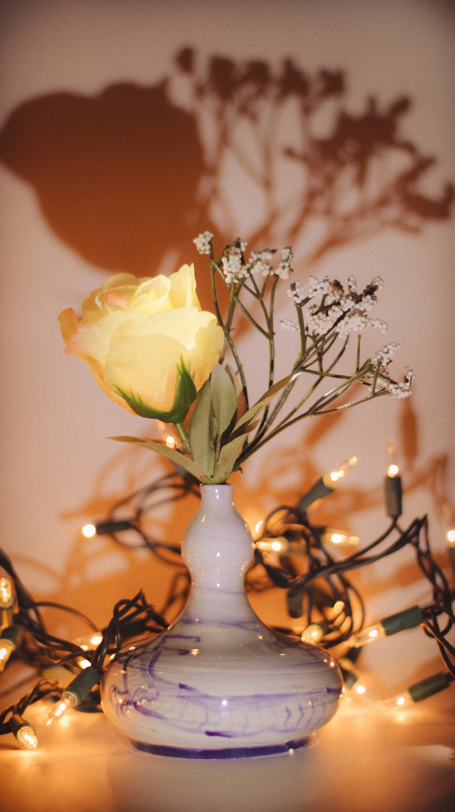
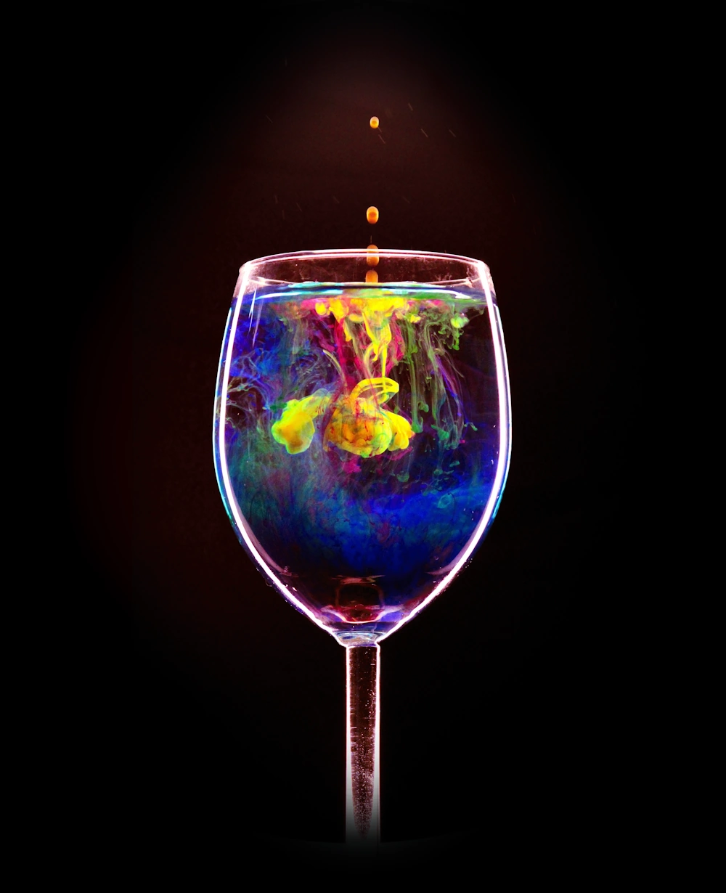
it's fun to capture the beauty of everyday objects. there's a lot of effort that people put into designing computers, vases, lights, cups, and whatever you see around you. that effort deserves to be enjoyed and appreciated.
i think that there's a certain feeling that you can get when looking at something — a feeling that you are in the designer's shoes, as if you are looking at that object for the first time after creating something great — that gets amplified when you take photos of those objects. one tries to find the angles from which the object looks stunning, and in doing so, one begins to understand at a deeper level the decisions the designer made when designing said object.
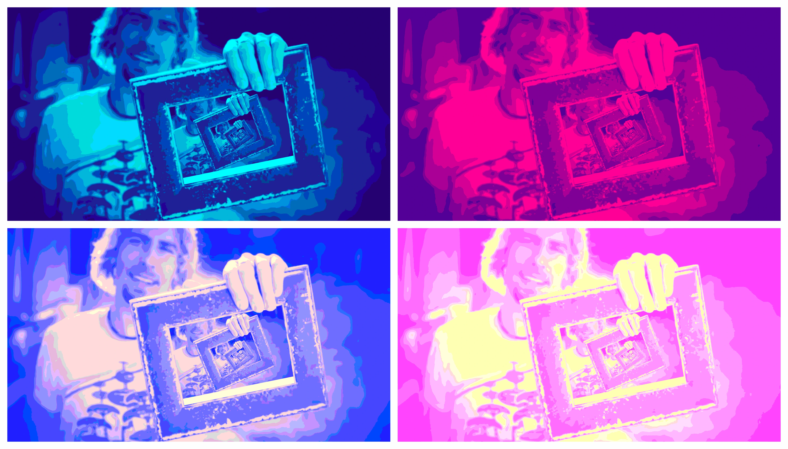
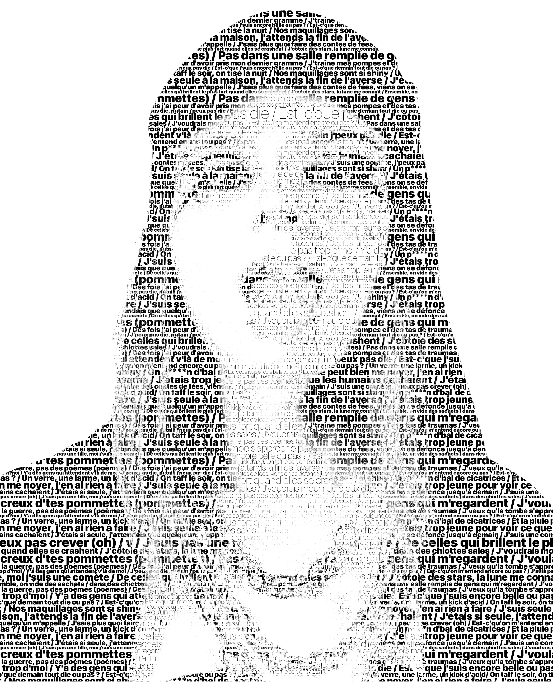
abstract things are beautiful too. there's so much that modern photo editing tools allow us to accomplish with colors, designs, and text, and i love leveraging those abilities to their fullest extent. even if that means sacrificing a bit of reality.
pareidolia is the mental process through which the mind tries to find familiar objects in unfamiliar stimuli. it's possible to destroy all visual clarity at the micro scale while preserving the image as a whole at the macro scale, and i think that's amazing.
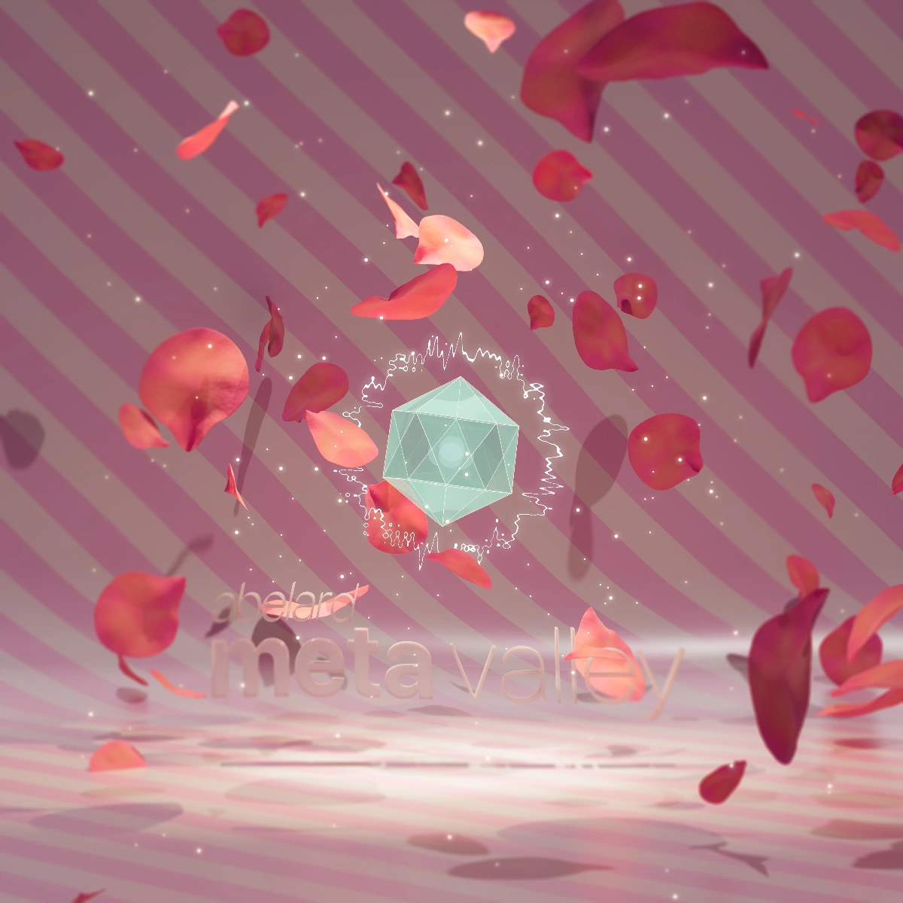
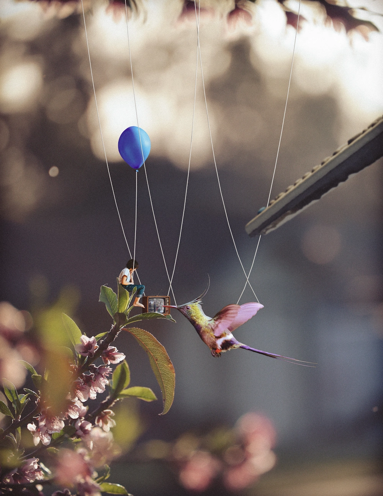
i love free software. blender has been shareware since 1998, and it's just wonderful. though the learning curve is steep, the fact that i could make anything with it made me stick with it. blender really allows anyone to create virtual worlds — whether realistic or not — in the way that they want. i love it!